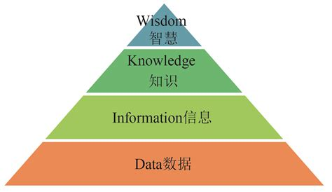

Big Data Time¶
DIKW金字塔模型¶
- 数据转化为信息
- 通过某种方式组织和处理数据，分析数据间的关系，数据就有了意义，这就是信息（Information）
- 知识是从相关信息中过滤、提炼及加工而得到的有用资料。特殊背景/语境下，知识将数据与信息、信息与信息在行动中的应用之间建立有意义的联系，它体现了信息的本质、原则和经验；
- 最后来看智慧（Wisdom），智慧是一种外推的、非确定性的、非盖然论的过程。智慧是哲学探索的本质，是判断是非、对错和好坏的过程，它所提出的问题是还没有答案的问题。与前几个阶段不同，智慧关注的是未来，试图理解过去未曾理解的东西，过去未做过的事，并且智慧是人类所特有的，是唯一不能用工具实现的；